Análisis discriminante
Dr. Luis Benites
26 de octubre del 2019

Análisis Discriminante Lineal
- Supongamos que un conjunto de objetos se clasifica en una serie de grupos; el Análisis Discriminante equivale a un análisis de regresión donde la variable dependiente es categórica y tiene como categorías la etiqueta de cada uno de los grupos, y las variables independientes son continuas y determinan a qué grupos pertenecen los objetos.
Análisis Discriminante Lineal
- Se trata de encontrar relaciones lineales entre las variables continuas que mejor discriminen en los grupos dados a los objetos. Además, se trata de definir una regla de decisión que asigne un objeto nuevo, que no sabemos clasificar previamente, a uno de los grupos prefijados.
Análisis Discriminante Lineal
Se presentan una serie de restricciones o supuestos:
- Se tiene una variable categórica y el resto de variables son de intervalo o de razón y son independientes respecto de ella.
- Es necesario que existan al menos dos grupos y para cada grupo se necesitan dos o más casos.
- El número de variables discriminantes debe ser menor que el número de objetos menos dos: \(x_1, \ldots , x_p\) donde \(p<(n−2)\) y \(n\) es el número de objetos.
Análisis Discriminante Lineal
Se presentan una serie de restricciones o supuestos:
- Ninguna variable discriminante puede ser combinación lineal de otras variables discriminantes.
- El número máximo de funciones discriminantes es igual al mínimo entre el número de variables y el número de grupos menos 1 (con \(q\) grupos, (\(q−1\)) funciones discriminantes)
Análisis Discriminante Lineal
Las condiciones que se deben cumplir para que un Análisis Discriminante Lineal sea válido son:
- Cada predictor que forma parte del modelo se distribuye de forma normal en cada una de las clases de la variable respuesta. En el caso de múltiples predictores, las observaciones siguen una distribución normal multivariante en todas las clases.
Análisis Discriminante Lineal
Las condiciones que se deben cumplir para que un Análisis Discriminante Lineal sea válido son:
- La varianza del predictor es igual en todas las clases de la variable respuesta. En el caso de múltiples predictores, la matriz de covarianza es igual en todas las clases. Si esto no se cumple se recurre a Análisis Discriminante Cuadrático (QDA).
Análisis Discriminante Lineal
Las condiciones que se deben cumplir para que un Análisis Discriminante Lineal sea válido son:
- Cuando la condición de normalidad no se cumple, el LDA pierde precisión pero aun así puede llegar a clasificaciones relativamente buenas. Using discriminant analysis for multi-class classification: an experimental investigation (Tao Li, Shenghuo Zhu, Mitsunori Ogihara).
Ejemplo 1
Se consideran los datos recogidos sobre 32 cráneos en el Tibet.
Los datos corresponden a dos tipos raciales diferentes en los que se practicaron diferentes medidas antropométricas de longitudes, anchuras de cráneo y de cara. Se trata de hacer un análisis discriminante sobre los dos tipos raciales.
cargando el conjunto de datos
## Longitud Anchura Altura Altura_Cara Anchura_Cara Tipo
## 1 190.5 152.5 145.0 73.5 136.5 uno
## 2 172.5 132.0 125.5 63.0 121.0 uno
## 3 167.0 130.0 125.5 69.5 119.5 uno
## 4 169.5 150.5 133.5 64.5 128.0 uno
## 5 175.0 138.5 126.0 77.5 135.5 uno
## 6 177.5 142.5 142.5 71.5 131.0 uno
## 7 179.5 142.5 127.5 70.5 134.5 uno
## 8 179.5 138.0 133.5 73.5 132.5 uno
## 9 173.5 135.5 130.5 70.0 133.5 uno
## 10 162.5 139.0 131.0 62.0 126.0 uno
## 11 178.5 135.0 136.0 71.0 124.0 uno
## 12 171.5 148.5 132.5 65.0 146.5 uno
## 13 180.5 139.0 132.0 74.5 134.5 uno
## 14 183.0 149.0 121.5 76.5 142.0 uno
## 15 169.5 130.0 131.0 68.0 119.0 uno
## 16 172.0 140.0 136.0 70.5 133.5 uno
## 17 170.0 126.5 134.5 66.0 118.5 uno
## 18 182.5 136.0 138.5 76.0 134.0 dos
## 19 179.5 135.0 128.5 74.0 132.0 dos
## 20 191.0 140.5 140.5 72.5 131.5 dos
## 21 184.5 141.5 134.5 76.5 141.5 dos
## 22 181.0 142.0 132.5 79.0 136.5 dos
## 23 173.5 136.5 126.0 71.5 136.5 dos
## 24 188.5 130.0 143.0 79.5 136.0 dos
## 25 175.0 153.0 130.0 76.5 142.0 dos
## 26 196.0 142.5 123.5 76.0 134.0 dos
## 27 200.0 139.5 143.5 82.5 146.0 dos
## 28 185.0 134.5 140.0 81.5 137.0 dos
## 29 174.5 143.5 132.5 74.0 136.5 dos
## 30 195.5 144.0 138.5 78.5 144.0 dos
## 31 197.0 131.5 135.0 80.5 139.0 dos
## 32 182.5 131.0 135.0 68.5 136.0 dosExploración gráfica de los datos
library(ggplot2)
library(ggpubr)
p1 <- ggplot(data = craneo, aes(x = Longitud, fill = Tipo)) +
geom_histogram(position = "identity", alpha = 0.5)
p2 <- ggplot(data = craneo, aes(x = Anchura, fill = Tipo)) +
geom_histogram(position = "identity", alpha = 0.5)
p3 <- ggplot(data = craneo, aes(x = Altura, fill = Tipo)) +
geom_histogram(position = "identity", alpha = 0.5)
p4 <- ggplot(data = craneo, aes(x = Altura_Cara, fill = Tipo)) +
geom_histogram(position = "identity", alpha = 0.5)
p5 <- ggplot(data = craneo, aes(x = Anchura_Cara, fill = Tipo)) +
geom_histogram(position = "identity", alpha = 0.5)
ggarrange(p1, p2, p3, p4, p5, nrow = 5, common.legend = TRUE)Exploración gráfica de los datos
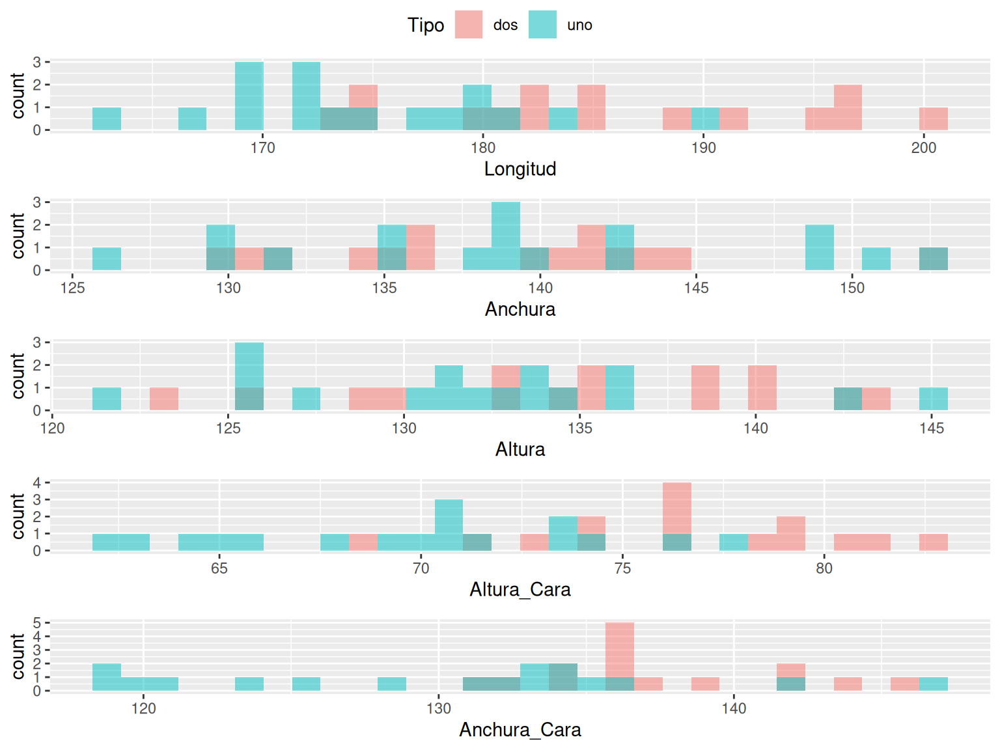
Exploración gráfica de los datos
A nivel individual, la anchura de la cara parece ser la variable que más se diferencia entre los dos tipos raciales.
(menor solapamiento entre poblaciones)
Seguida de las variables altura de la cara y longitud del craneo que también se diferencia entre los dos tipos raciales.Exploración gráfica de los datos
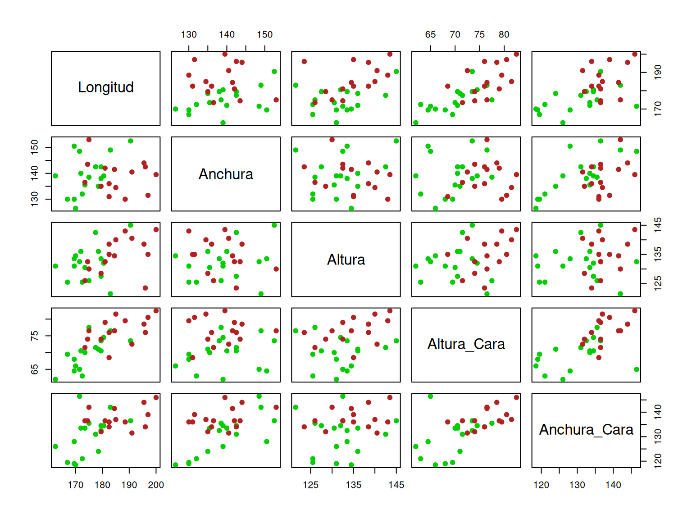
Exploración gráfica de los datos
pairs(x = craneo[, c("Longitud", "Anchura", "Altura", "Altura_Cara", "Anchura_Cara")],
col = c("firebrick", "green3")[craneo$Tipo], pch = 19)
Las variables altura de cara y anchura de cara tienen potencial para poder separar los tipos de raza. Sin embargo, parecen estar altamente correlacionadas, por lo que la información que aportan es redundante.
Las variables altura y altura de cara también tienen potencial para poder separar los tipos de raza.
La variable longitud cruzada con el resto de variables también muestra potencial para separar los tipos de raza.
Probabilidades a priori
Como no se dispone de información sobre la abundancia relativa de los tipos raciales a nivel poblacional, se considera como probabilidad previa de cada especie el número de observaciones del tipo racial entre el número de observaciones totales.
##
## dos uno
## 0.46875 0.53125\[\hat{\pi}_{uno}=0.53 \quad \text{y} \quad \hat{\pi}_{dos}=0.47\]
Normalidad univariante
# Representación mediante Histograma de cada variable para cada tipo
par(mfcol = c(2, 5))
for (k in 1:5) {
j0 <- names(craneo)[k]
x0 <- seq(min(craneo[, k]), max(craneo[, k]), le = 1000)
for (i in 1:2) {
i0 <- levels(craneo$Tipo)[i]
x <- craneo[craneo$Tipo == i0, j0]
hist(x, proba = T, col = grey(0.8), main = paste("Tipo", i0),
xlab = j0)
lines(x0, dnorm(x0, mean(x), sd(x)), col = "red", lwd = 2)
}
}
par(mfcol = c(1, 1))Normalidad univariante
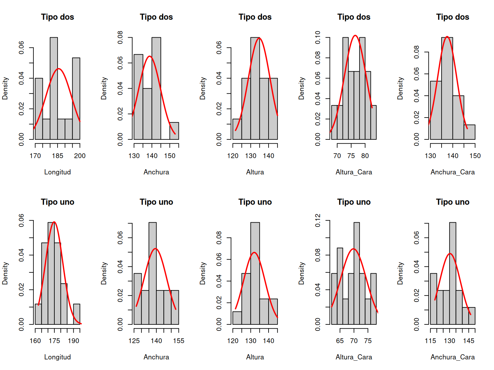
Normalidad univariante
# Representación de cuantiles normales de cada variable para cada tipo
par(mfcol = c(2, 5))
for (k in 1:5) {
j0 <- names(craneo)[k]
x0 <- seq(min(craneo[, k]), max(craneo[, k]), le = 1000)
for (i in 1:2) {
i0 <- levels(craneo$Tipo)[i]
x <- craneo[craneo$Tipo == i0, j0]
qqnorm(x, main = paste("Tipo", i0, j0), pch = 19, col = i + 1)
qqline(x)
}
}
par(mfcol = c(1, 1))Normalidad univariante
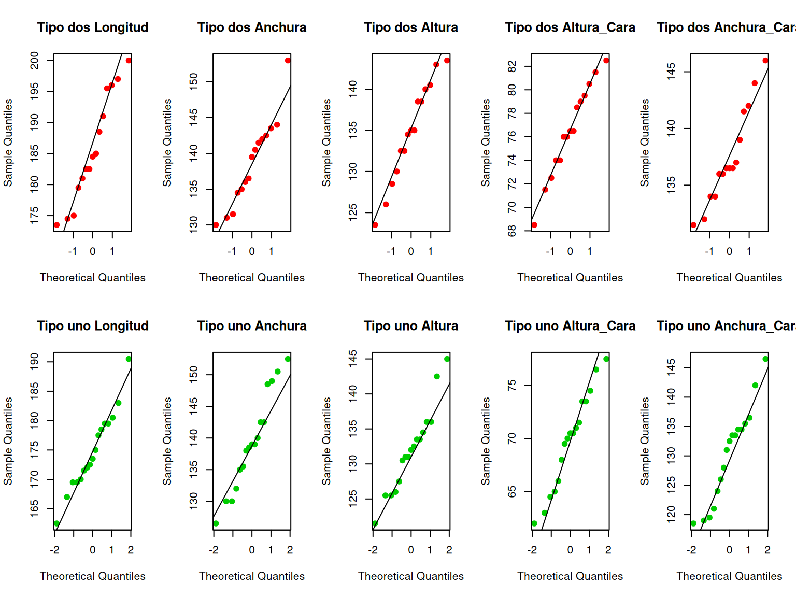
Normalidad univariante
\(H_0:\) El conjunto de datos sigue una distribución normal
\(H_1:\) El conjunto de datos no sigue una distribución normal
Normalidad univariante
| Tipo | variable | p_value_Shapiro.test |
|---|---|---|
| dos | Longitud | 0.4003952 |
| dos | Anchura | 0.4665877 |
| dos | Altura | 0.7850492 |
| dos | Altura_Cara | 0.9395995 |
| dos | Anchura_Cara | 0.3219514 |
| uno | Longitud | 0.8900856 |
| uno | Anchura | 0.6468092 |
| uno | Altura | 0.6053364 |
| uno | Altura_Cara | 0.7798472 |
| uno | Anchura_Cara | 0.4071086 |
\(H_0:\) El conjunto de datos sigue una distribución normal
\(H_1:\) El conjunto de datos no sigue una distribución normal
Normalidad univariante
## Tipo variable valor
## 1 dos Longitud 0.4003952
## 2 uno Longitud 0.8900856
## 3 dos Anchura 0.4665877
## 4 uno Anchura 0.6468092
## 5 dos Altura 0.7850492
## 6 uno Altura 0.6053364
## 7 dos Altura_Cara 0.9395995
## 8 uno Altura_Cara 0.7798472
## 9 dos Anchura_Cara 0.3219514
## 10 uno Anchura_Cara 0.4071086# Misma operación con aggregate
aggregate(formula = valor ~ Tipo + variable, data = datos_tidy,
FUN = function(x){shapiro.test(x)$p.value})
\(H_0:\) El conjunto de datos sigue una distribución normal
\(H_1:\) El conjunto de datos no sigue una distribución normal
No hay evidencias de falta de normalidad univariante en ninguna de las variables empleadas como predictores en ninguno de los grupos.Normalidad multivariante
El paquete MVN contiene funciones que permiten realizar los tres test de hipótesis comúnmente empleados para evaluar la normalidad multivariante (Mardia, Henze-Zirkler y Royston) y también funciones para identificar outliers que puedan influenciar en el contraste.
Normalidad multivariante
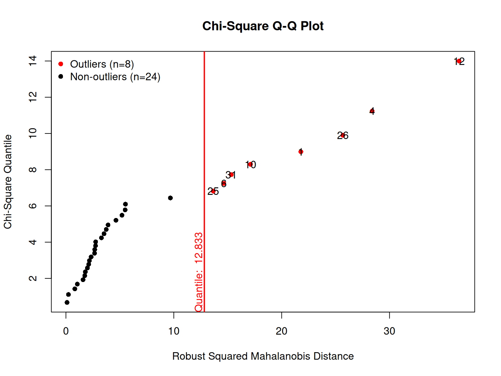
Normalidad multivariante
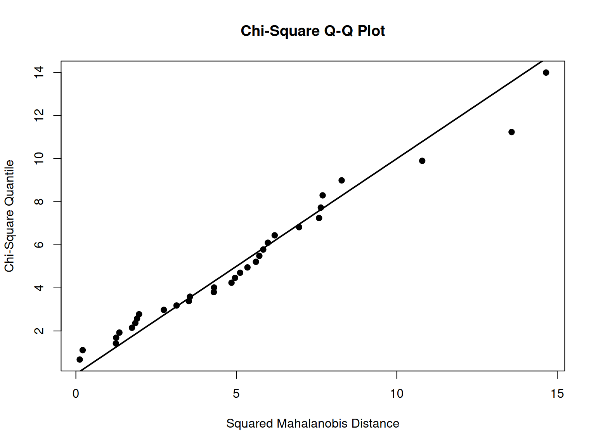
Normalidad multivariante
## Test H p value MVN
## 1 Royston 4.942764 0.4233818 YES## Test HZ p value MVN
## 1 Henze-Zirkler 0.8261507 0.3755845 YESroyston_test$multivariateNormality
hz_test <- mvn(data = craneo[,-6], mvnTest = "hz")
hz_test$multivariateNormality
\(H_0:\) El conjunto de datos sigue una distribución normal multivariante
\(H_1:\) El conjunto de datos no sigue una distribución normal multivariante
A pesar de los \(n=8\) outliers detectados, ninguno de los dos test encuentran evidencias significativas (\(\alpha=0.05\)) de falta de normalidad multivariante.Homogeneidad de Varianza
El test Box M fue desarrollado por el matemático Box (1949) como una extensión del test de Barttlet para escenarios multivariante y permite contrastar la igualdad de matrices entre grupos. El test Box M es muy sensible a violaciones de la normalidad multivariante, por lo que esta debe ser contrastada con anterioridad. Ocurre con frecuencia, que el resultado de un test Box M resulta significativo debido a la falta de distribución normal multivariante en lugar de por falta de homogeneidad en las matrices de covarianza. Dada la sensibilidad de este test se recomienda emplear un límite de significancia de 0.001 (Tabachnick & Fidell, 2001, y http://www.real-statistics.com/multivariate-statistics/).
Homogeneidad de Varianza
## ---
## biotools version 3.1##
## Box's M-test for Homogeneity of Covariance Matrices
##
## data: craneo[, 1:5]
## Chi-Sq (approx.) = 18.371, df = 15, p-value = 0.2437
\(H_0:\) La matriz de covarianza es igual en todos los grupos
\(H_1:\) La matriz de covarianza no es igual en todos los grupos
La prueba de hipotesis no encuentran evidencias significativas (\(\alpha=0.05\)) de falta de homogenidad de la matriz de covarianza en todos los grupos.Análisis discriminante lineal2
## Call:
## lda(Tipo ~ Longitud + Anchura + Altura + Altura_Cara + Anchura_Cara,
## data = craneo)
##
## Prior probabilities of groups:
## dos uno
## 0.46875 0.53125
##
## Group means:
## Longitud Anchura Altura Altura_Cara Anchura_Cara
## dos 185.7333 138.7333 134.7667 76.46667 137.5000
## uno 174.8235 139.3529 132.0000 69.82353 130.3529
##
## Coefficients of linear discriminants:
## LD1
## Longitud -0.047726591
## Anchura 0.083247929
## Altura 0.002795841
## Altura_Cara -0.094695000
## Anchura_Cara -0.094809401Clasificación de nuevos craneos
nuevosdatos <-
rbind(c(171,140.5,127.0,69.5,137.0),c(179.0,132.0,140.0,72.0,138.5))
# Asigno a los dos nuevos datos los nombres de las variables
colnames(nuevosdatos) <- colnames(craneo[,-6])
nuevosdatos <- data.frame(nuevosdatos)
nuevosdatos
# Se predice el grupo de pertenencia de los nuevos datos
predict(modelo_lda,newdata=nuevosdatos)$class
predict(modelo_lda,newdata=nuevosdatos)Clasificación de nuevos craneos
## Longitud Anchura Altura Altura_Cara Anchura_Cara
## 1 171 140.5 127 69.5 137.0
## 2 179 132.0 140 72.0 138.5## [1] uno dos
## Levels: dos uno## $class
## [1] uno dos
## Levels: dos uno
##
## $posterior
## dos uno
## 1 0.2230540 0.7769460
## 2 0.8071613 0.1928387
##
## $x
## LD1
## 1 0.5415596
## 2 -0.8904662
Por ejemplo, dos nuevos craneos cuyas medidas sean:
Longitud=171, Anchura=140.5, Altura=127, Altura_Cara=69.5, y Anchura_Cara=137.
Longitud=179, Anchura=132, Altura=140, Altura_Cara=72, y Anchura_Cara=138.5.
La probabilidad posterior de que el primer craneo pertenezca a la raza tipo 1 es del 77.69% frente al 22.31% de que pertenezca a la raza tipo 2.
La probabilidad posterior de que el segundo craneo pertenezca a la raza tipo 1 es del 19.28% frente al 80.72% de que pertenezca a la raza tipo 2.
Evaluación de los errores de clasificación
## Clase predicha
## Clase real dos uno
## dos 11 4
## uno 3 14## [1] "trainig_error= 21.875 %"Empleando las mismas observaciones con las que se ha generado el modelo discriminante (trainig data), la precisión de clasificación es del 78.13%. Evaluar un modelo con los mismos datos con los que se ha creado suele resultar en estimaciones de la precisión demasiado optimistas (training error muy bajo).
Visualización de las clasificaciones
Visualización de las clasificaciones
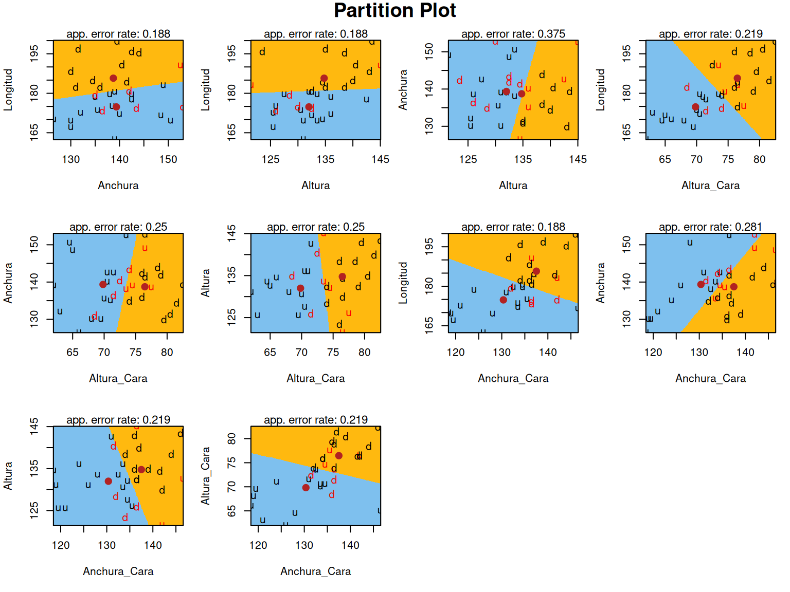
Se desea predecir si un paciente pertenece a una de las siguientes cla- ses: Normal (el paciente esta sano), Chemical (el paciente presenta pre-diabetes) y Overt (el paciente presenta diabetes) utilizando tres indicadores de la sangre (glucosa,insulina y sspg).
Ejemplo 2
Se desea predecir si un paciente pertenece a una de las siguientes clases: Normal (el paciente esta sano), Chemical (el paciente presenta pre-diabetes) y Overt (el paciente presenta diabetes) utilizando tres indicadores de la sangre (glucosa,insulina y sspg).
cargando el conjunto de datos
## glucose insulin sspg class
## 1 97 289 117 normal
## 2 105 319 143 normal
## 3 90 356 199 normal
## 4 90 323 240 normal
## 5 86 381 157 normal
## 6 100 350 221 normal
## 7 85 301 186 normal
## 8 97 379 142 normal
## 9 97 296 131 normal
## 10 91 353 221 normal
## 11 87 306 178 normal
## 12 78 290 136 normal
## 13 90 371 200 normal
## 14 80 393 202 normal
## 15 90 364 152 normal
## 16 99 359 185 normal
## 17 85 296 116 normal
## 18 90 345 123 normal
## 19 90 378 136 normal
## 20 88 304 134 normal
## 21 90 327 192 normal
## 22 92 386 279 normal
## 23 98 365 145 normal
## 24 100 352 172 normal
## 25 86 325 179 normal
## 26 98 321 222 normal
## 27 70 360 134 normal
## 28 99 336 143 normal
## 29 75 352 169 normal
## 30 90 353 263 normal
## 31 85 373 174 normal
## 32 99 376 134 normal
## 33 100 367 182 normal
## 34 78 335 241 normal
## 35 106 396 128 normal
## 36 102 378 165 normal
## 37 90 360 282 normal
## 38 94 291 94 normal
## 39 80 269 121 normal
## 40 93 318 73 normal
## 41 96 356 112 normal
## 42 88 291 157 normal
## 43 94 313 200 normal
## 44 93 306 220 normal
## 45 86 319 144 normal
## 46 96 332 151 normal
## 47 86 323 158 normal
## 48 89 323 73 normal
## 49 83 351 81 normal
## 50 98 478 151 chemical
## 51 100 398 122 normal
## 52 110 426 117 normal
## 53 88 439 208 chemical
## 54 80 333 131 normal
## 55 91 436 148 chemical
## 56 96 418 130 normal
## 57 95 391 137 normal
## 58 84 416 146 normal
## 59 100 385 192 normal
## 60 86 393 115 normal
## 61 93 376 195 normal
## 62 107 403 267 normal
## 63 112 414 281 normal
## 64 94 426 213 chemical
## 65 93 364 156 normal
## 66 93 391 221 normal
## 67 90 356 199 normal
## 68 99 398 76 normal
## 69 93 393 490 normal
## 70 85 425 143 chemical
## 71 89 318 73 normal
## 72 111 558 748 chemical
## 73 114 540 188 chemical
## 74 101 469 607 chemical
## 75 112 568 232 chemical
## 76 105 527 480 chemical
## 77 103 537 622 chemical
## 78 99 466 287 chemical
## 79 102 599 266 chemical
## 80 96 456 326 chemical
## 81 95 517 564 chemical
## 82 110 522 325 chemical
## 83 92 476 433 chemical
## 84 104 472 180 chemical
## 85 92 442 109 chemical
## 86 92 541 313 chemical
## 87 92 580 132 chemical
## 88 93 472 285 chemical
## 89 112 562 139 chemical
## 90 88 423 212 chemical
## 91 114 643 155 chemical
## 92 103 533 120 chemical
## 93 303 1487 23 overt
## 94 125 714 232 overt
## 95 280 1470 54 overt
## 96 216 1113 81 overt
## 97 190 972 87 overt
## 98 303 1364 42 overt
## 99 173 832 102 overt
## 100 203 967 138 overt
## 101 140 613 131 overt
## 102 275 1373 45 overt
## 103 260 1133 118 overt
## 104 233 1183 73 overt
## 105 146 847 103 overt
## 106 124 538 460 overt
## 107 213 1001 42 overt
## 108 330 1520 13 overt
## 109 123 557 130 overt
## 110 130 670 44 overt
## 111 120 636 314 overt
## 112 138 741 219 overt
## 113 188 958 100 overt
## 114 339 1354 10 overt
## 115 213 1025 29 overtExploración gráfica de los datos
library(ggplot2)
library(ggpubr)
plot1 <- ggplot(data = diabetes, aes(x = glucose)) +
geom_density(aes(colour = class)) + theme_bw()
plot2 <- ggplot(data = diabetes, aes(x = insulin)) +
geom_density(aes(colour = class)) + theme_bw()
plot3 <- ggplot(data = diabetes, aes(x = sspg)) +
geom_density(aes(colour = class)) + theme_bw()
# la función grid.arrange del paquete grid.extra permite ordenar
# graficos de ggplot2
ggarrange(plot1, plot2, plot3, common.legend = TRUE, legend = "bottom")Exploración gráfica de los datos
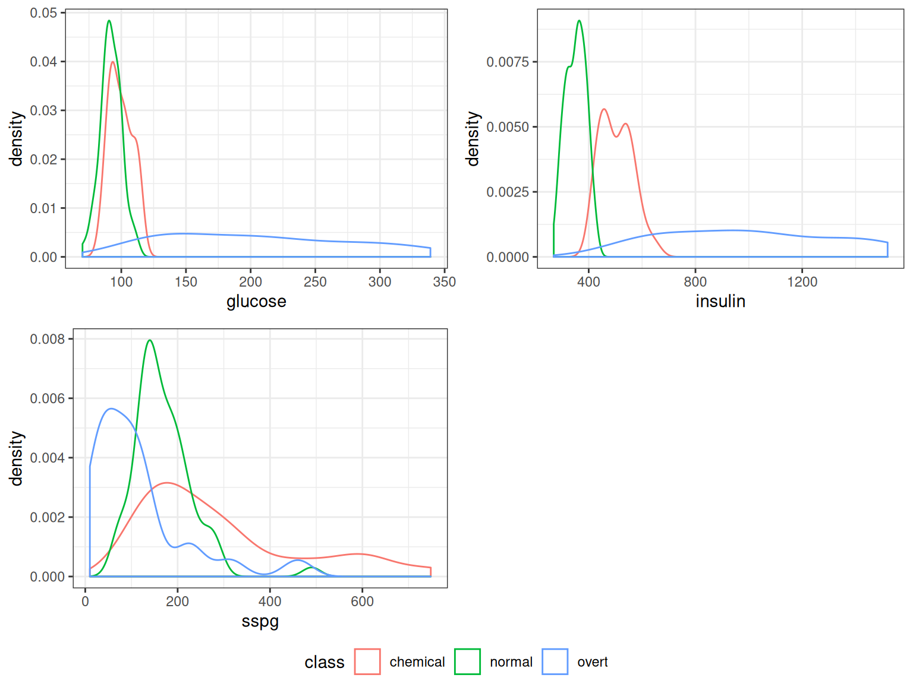
Exploración gráfica de los datos
La variable sspg presenta asimetría positiva dentro de cada grupo de pacientes.
Exploración gráfica de los datos
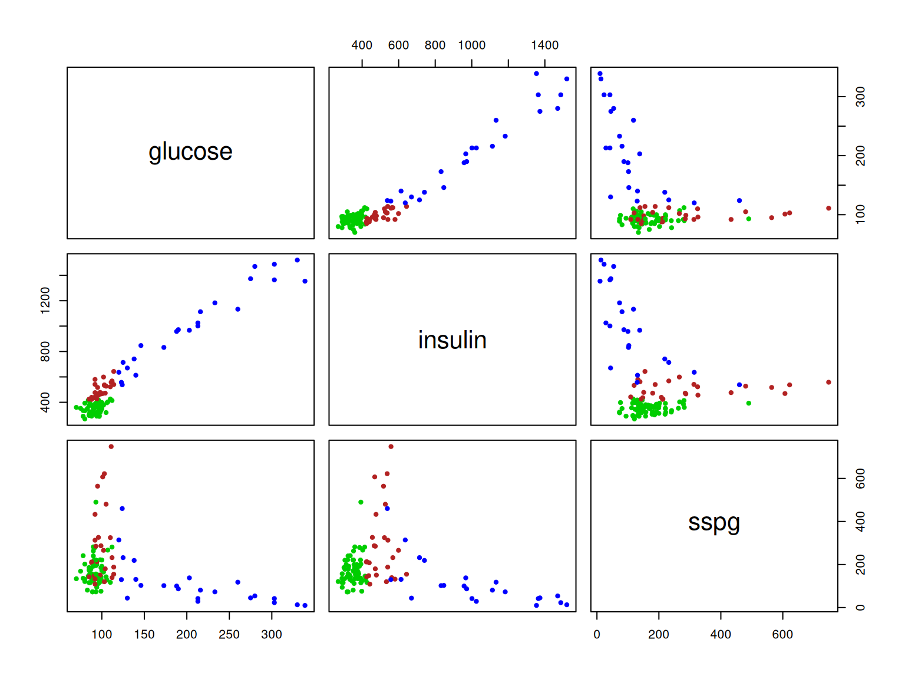
Exploración gráfica de los datos
Las variables glucosa e insulina son las dos variables con más potencial para poder separar entre clases de pacientes. Sin embargo, están altamente correlacionadas, por lo que la información que aportan es en gran medida redundante.
Probabilidades a priori
Como no se dispone de información sobre la abundancia relativa de las clases de pacientes a nivel poblacional, se considera como probabilidad previa de cada clase el número de observaciones por clase de paciente entre el número de observaciones totales.
##
## chemical normal overt
## 0.226087 0.573913 0.200000\[\hat{\pi}_{sano}=0.57\text{,} \quad \hat{\pi}_{pre}=0.23 \quad \text{y} \quad \hat{\pi}_{diab}=0.20\]
Normalidad univariante
#representación mediante histograma de cada variable para cada clase
par(mar = rep(3, 3))
for (k in 1:3) {
j0 <- names(diabetes)[k]
x0 <- seq(min(diabetes[, k]), max(diabetes[, k]), le = 1000)
for (i in 1:3) {
i0 <- levels(diabetes$class)[i]
x <- diabetes[diabetes$class == i0, j0]
hist(x, proba = T, col = grey(0.8), main = paste("class", i0),
xlab = j0)
lines(x0, dnorm(x0, mean(x), sd(x)), col = "red", lwd = 2)
}
}
par(mar = rep(1, 1))Normalidad univariante
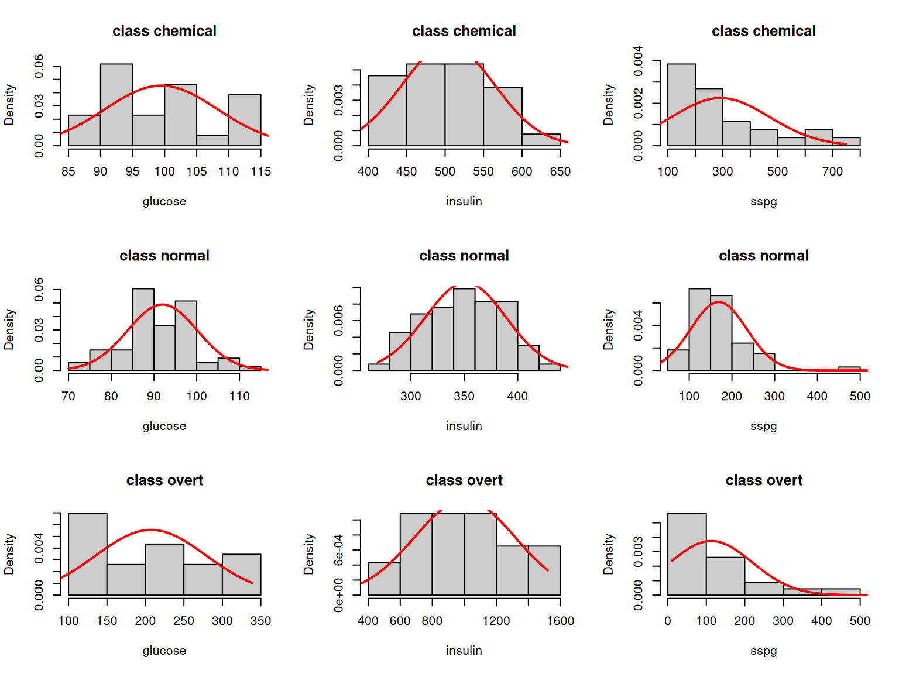
Normalidad univariante
#representación de cuantiles normales de cada variable para cada clase
par(mfcol = c(3, 3))
for (k in 1:3) {
j0 <- names(diabetes)[k]
x0 <- seq(min(diabetes[, k]), max(diabetes[, k]), le = 1000)
for (i in 1:3) {
i0 <- levels(diabetes$class)[i]
x <- diabetes[diabetes$class == i0, j0]
qqnorm(x, main = paste(i0, j0), pch = 19, col = i + 1)
qqline(x)
}
}
par(mfcol = c(1, 1))Normalidad univariante
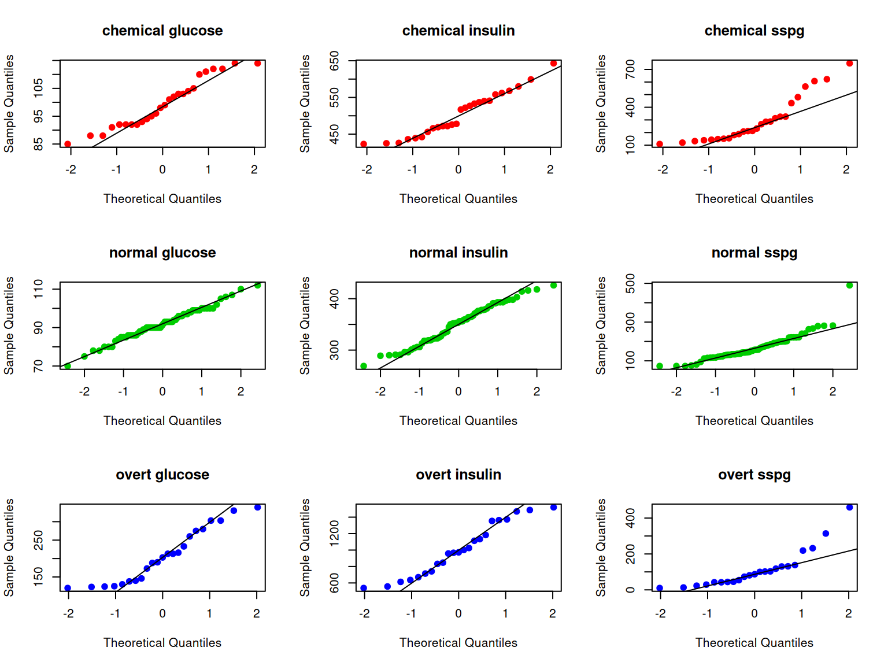
Normalidad univariante
\(H_0:\) El conjunto de datos sigue una distribución normal
\(H_1:\) El conjunto de datos no sigue una distribución normal
Normalidad univariante
| class | variable | p_value_Shapiro.test |
|---|---|---|
| chemical | glucose | 0.11551 |
| chemical | insulin | 0.17119 |
| chemical | sspg | 0.00133 |
| normal | glucose | 0.81720 |
| normal | insulin | 0.26450 |
| normal | sspg | 0.00000 |
| overt | glucose | 0.05406 |
| overt | insulin | 0.18050 |
| overt | sspg | 0.00031 |
\(H_0:\) El conjunto de datos sigue una distribución normal
\(H_1:\) El conjunto de datos no sigue una distribución normal
Normalidad multivariante
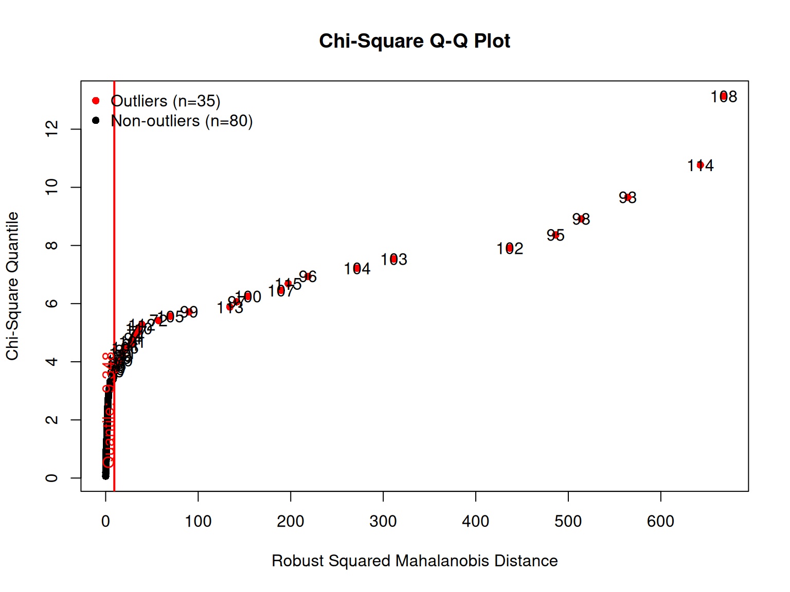
Normalidad multivariante
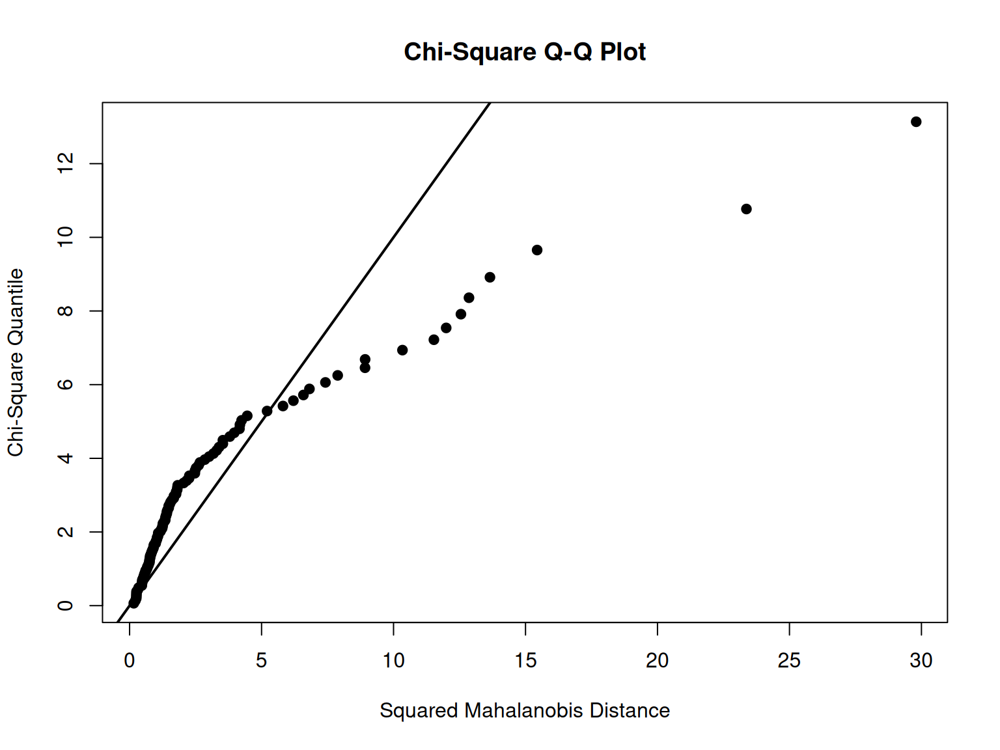
Normalidad multivariante
## Test H p value MVN
## 1 Royston 113.878 2.120468e-25 NO## Test HZ p value MVN
## 1 Henze-Zirkler 9.215609 0 NOroyston_test$multivariateNormality
hz_test <- mvn(data = diabetes[,-4], mvnTest = "hz")
hz_test$multivariateNormality
\(H_0:\) El conjunto de datos sigue una distribución normal multivariante
\(H_1:\) El conjunto de datos no sigue una distribución normal multivariante
Ambos test muestran evidencias significativas de falta de normalidad multivariante. El LDA tiene cierta robustez frente a la falta de normalidad multivariante, pero es importante tenerlo en cuenta en la conclusión del análisis.Homogeneidad de Varianza
##
## Box's M-test for Homogeneity of Covariance Matrices
##
## data: diabetes[, -4]
## Chi-Sq (approx.) = 290.13, df = 12, p-value < 2.2e-16
\(H_0:\) La matriz de covarianza es igual en todos los grupos
\(H_1:\) La matriz de covarianza no es igual en todos los grupos
El test Box’s M muestra evidencias de que la matriz de covarianza no es constante en todos los grupos, lo que a priori descartaría el método LDA en favor del QDA.
Sin embargo, como el test Box’s M es muy sensible a la falta de normalidad multivariante, con frecuencia resulta significativo no porque la matriz de covarianza no sea constante sino por la falta de normalidad.
Por esta razón se va a asumir que la matriz de covarianza sí es constante y que LDA puede alcanzar una buena precisión en la clasificación.
Análisis discriminante lineal2
## Call:
## lda(class ~ ., data = diabetes)
##
## Prior probabilities of groups:
## chemical normal overt
## 0.226087 0.573913 0.200000
##
## Group means:
## glucose insulin sspg
## chemical 99.46154 504.1154 291.7692
## normal 91.98485 351.2121 169.0152
## overt 207.17391 1002.9565 112.6087
##
## Coefficients of linear discriminants:
## LD1 LD2
## glucose -0.035130542 -0.056150421
## insulin 0.013748266 0.009876402
## sspg 0.001344232 0.005489825
##
## Proportion of trace:
## LD1 LD2
## 0.8526 0.1474Evaluación de los errores de clasificación
## Clase predicha
## Clase real chemical normal overt
## chemical 19 7 0
## normal 1 65 0
## overt 5 2 16## [1] "trainig_error = 13.0434782608696 %"De total de las observaciones 15 de las 115 predicciones que ha realizado el modelo han sido erróneas. El trainig error es de (13.04%). Sin embargo, para validarlo es necesario un nuevo set de datos con el que calcular el test error o recurrir a validación cruzada.
Visualización de las clasificaciones
library(klaR)
partimat(class~.,data=diabetes, method = "lda", prec = 200,
image.colors = c("darkgoldenrod1", "snow2", "skyblue2"),
col.mean = "firebrick",nplots.hor=3)
La función partimat() del paquete klar permite representar los límites de clasificación de un modelo discriminante lineal o cuadrático para cada par de predictores. Cada color representa una región de clasificación acorde al modelo, se muestra el centroide de cada región y el valor real de las observaciones.
Visualización de las clasificaciones
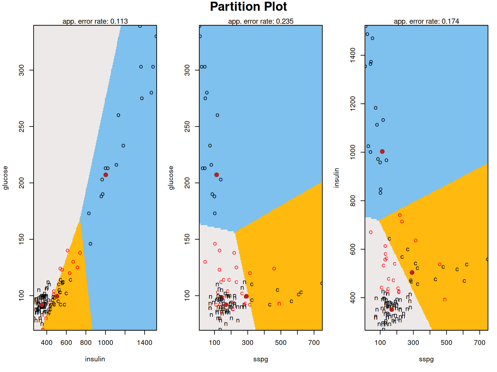
Ejemplo 3
El conjunto de datos, que contiene atributos y resultados en 1000 solicitudes de préstamo, fue proporcionado en 1994 por el Dr. Hans Hofmann, del Institut fuer Statistik und Oekonometrie de la Universidad de Hamburgo. Ha servido como un importante conjunto de datos de prueba para varios algoritmos de calificación crediticia. Las categorias de clasificación son Default(Moroso): 0 (no) and 1 (si)
Cargando el conjunto de datos
## Default checkingstatus1 duration history purpose amount savings employ
## 1 0 A11 6 A34 A43 1169 A65 A75
## 2 1 A12 48 A32 A43 5951 A61 A73
## installment status others residence property age otherplans housing cards
## 1 4 A93 A101 4 A121 67 A143 A152 2
## 2 2 A92 A101 2 A121 22 A143 A152 1
## job liable tele foreign
## 1 A173 1 A192 A201
## 2 A173 1 A191 A201
Como se puede ver, solo las variables: duración (duration), monto (amount), plazo (installment) y edad (age) son numéricas. Con los restantes (indicadores), las suposiciones de una distribución normal serían, en el mejor de los casos, débiles; por lo tanto estas variables no son consideradas aquí.
Conjunto de datos final
## Default duration amount installment age
## 1 0 6 1169 4 67
## 2 1 48 5951 2 22
## 3 0 12 2096 2 49
## 4 0 42 7882 2 45
## 5 1 24 4870 3 53
## 6 0 36 9055 2 35Normalidad multivariante
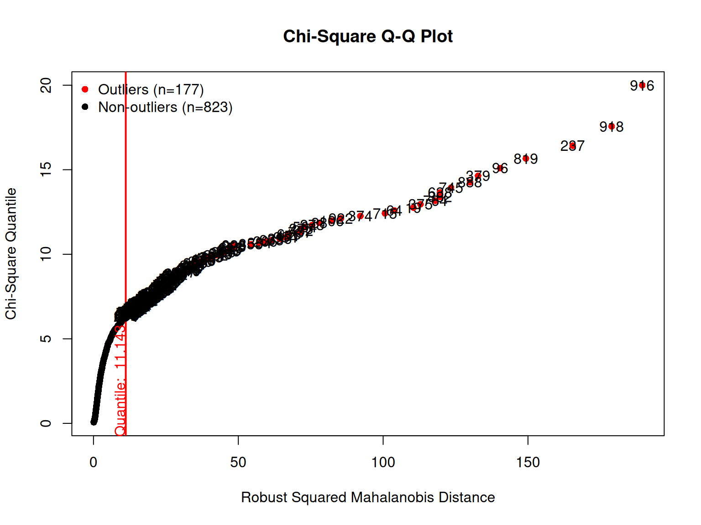
Normalidad multivariante
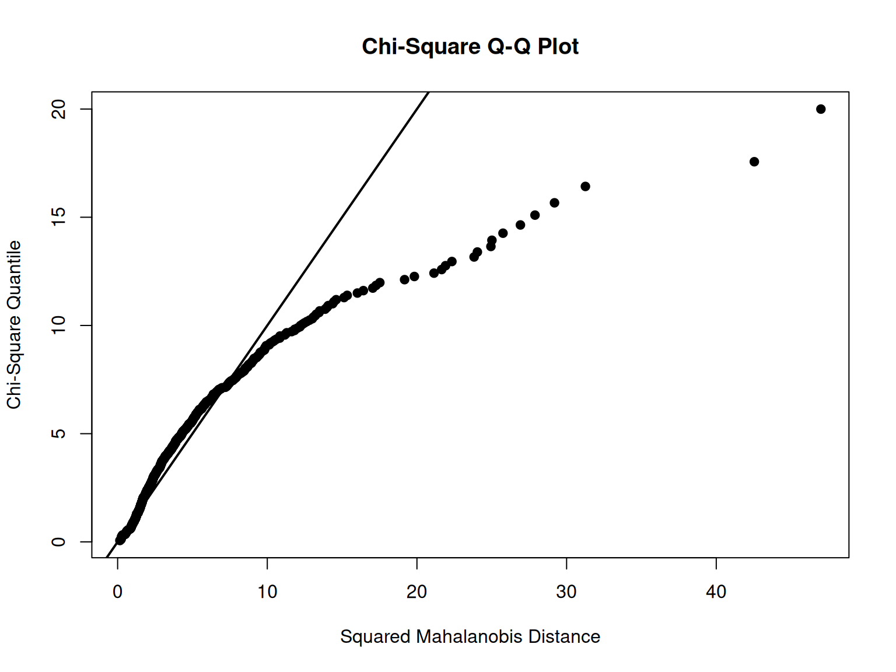
Normalidad multivariante
## Test H p value MVN
## 1 Royston 498.872 1.184884e-106 NO## Test HZ p value MVN
## 1 Henze-Zirkler 17.40368 0 NOroyston_test$multivariateNormality
hz_test <- mvn(data = cred1[,-1], mvnTest = "hz")
hz_test$multivariateNormality
\(H_0:\) El conjunto de datos sigue una distribución normal multivariante
\(H_1:\) El conjunto de datos no sigue una distribución normal multivariante
Los datos no siguen una distribución normal multivariante, lo que tiene implicaciones directas en la precisión del QDA.Homogeneidad de Varianza
##
## Box's M-test for Homogeneity of Covariance Matrices
##
## data: cred1[, -1]
## Chi-Sq (approx.) = 160.06, df = 10, p-value < 2.2e-16
\(H_0:\) La matriz de covarianza es igual en todos los grupos
\(H_1:\) La matriz de covarianza no es igual en todos los grupos
El test Box’s M muestra mucha evidencia de que la matriz de covarianza no es constante en todos los grupos, esta condición hace que el QDA sea más adecuado.
Anáslisis de discriminante cuadrático
## Call:
## qda(Default ~ ., data = cred1)
##
## Prior probabilities of groups:
## 0 1
## 0.7 0.3
##
## Group means:
## duration amount installment age
## 0 19.20714 2985.457 2.920000 36.22429
## 1 24.86000 3938.127 3.096667 33.96333Clasificación de nuevas observaciones
zqua=qda(Default~.,cred1)
predict(zqua,newdata=data.frame(duration=6,amount=1100,installment=4,age=67))## $class
## [1] 0
## Levels: 0 1
##
## $posterior
## 0 1
## 1 0.9375556 0.06244441La probabilidad posterior de que el cliente sea moroso del 6.24% frente al 93.76% de que no sea moroso.
Evaluación de los errores de clasificación
## Clase predicha
## Clase real 0 1
## 0 628 72
## 1 221 79## [1] "trainig_error = 29.3 %"De total de las observaciones 293 de las 1000 predicciones que ha realizado el modelo han sido erróneas. El trainig error es de (29.3%). Sin embargo, para validarlo es necesario un nuevo set de datos con el que calcular el test error o recurrir a validación cruzada.